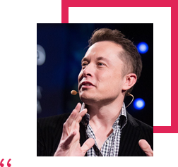

Марс. Вспомнить всё
Что такое Марс?
Планета Солнечной системы, названа в честь Марса — древнеримского Бога войны. Иногда Марс называют «красной планетой» из-за красного оттенка поверхности, придаваемого ей оксидом железа.
Особенности планеты — наличие слабой атмосферы, состоящей в основном из улекислого газа, времена года, пылевые бури, сильная эрозия почв.
Где это? Как туда доехать?
Расстояние до Марса — почти 56 миллионов километров. Чтобы преодолеть такое расстояние, нужно лететь на межпланетоном корабле 7-8 месяцев.
От идеи до реализации
Илон Маск. Гений или безумец?
Канадско-американский инженер, предприниматель, изобретатель и инвестор; миллиардер. Основатель компаний SpaceX и X.com, позже переименованной в PayPal. Планирует потратить большую часть накоплений на реализацию своей мечты, а также мечты многих тысяч романтиков, писателей, учёных: создать внеземную цивилизацию.
Мы должны сделать эту мечту реальностью за наше время жизни. Любой человек, который пожелает отправиться на Марс, должен иметь такую возможность.
— заявил Маск на Международной астронавтической конференции в Гвадалахаре (Мексика). Он обосновал необходимость своего проекта вопросом выживания человечества, которое для своего сохранения должно стать «космическим видом».
Илон поставил перед собой цель: скоратить стоимость вывода кораблей в космос в 10 раз, что станет первым шагом для человечества в освоении Марса.
Стоимость перелёта
Высадка двоих астронавтов на Луну обошлась США в 20 млрд. долларов. Маск стремится сократить эту цифру в 20 000 раз, что составит 500 000 долларов на человека.
$500 kПодводные камни в масштабах Космоса
Жить или выживать?
Готовы ли технологии?
Путешествие на грани фантастики
Жизнь на Марсе
Жить или выживать?
Текст блока №1. Чем отличаются Земля и Марс? Какие условия встретят новых поселенцев?
Марс холодная и засушливая планета, на которой есть своя атмосфера, на 96% состоящая из углекислых газов, а минимальная температура опускается до -140 градусов по Цельсию. Каждый год по весне на планете случаются пылевые бури, длящиеся от нескольких часов до нескольких месяцев.
На планете отсутствует магнитное поле, поэтому радиационный фон повышен. А низкая гравитация при длитеьном пребывании на Марсе сделает возвращение на Землю невозможным. Полёт на Марс — билет в один конец с целью создать новую цивилизацию.
Готовы ли технологии?
Текст блока №2. Чем отличаются Земля и Марс? Какие условия встретят новых поселенцев?
Марс холодная и засушливая планета, на которой есть своя атмосфера, на 96% состоящая из углекислых газов, а минимальная температура опускается до -140 градусов по Цельсию. Каждый год по весне на планете случаются пылевые бури, длящиеся от нескольких часов до нескольких месяцев.
На планете отсутствует магнитное поле, поэтому радиационный фон повышен. А низкая гравитация при длитеьном пребывании на Марсе сделает возвращение на Землю невозможным. Полёт на Марс — билет в один конец с целью создать новую цивилизацию.
Путешествие на грани фантастики
Текст блока №3. Чем отличаются Земля и Марс? Какие условия встретят новых поселенцев?
Марс холодная и засушливая планета, на которой есть своя атмосфера, на 96% состоящая из углекислых газов, а минимальная температура опускается до -140 градусов по Цельсию. Каждый год по весне на планете случаются пылевые бури, длящиеся от нескольких часов до нескольких месяцев.
На планете отсутствует магнитное поле, поэтому радиационный фон повышен. А низкая гравитация при длитеьном пребывании на Марсе сделает возвращение на Землю невозможным. Полёт на Марс — билет в один конец с целью создать новую цивилизацию.
Жизнь на Марсе
Текст блока №4. Чем отличаются Земля и Марс? Какие условия встретят новых поселенцев?
Марс холодная и засушливая планета, на которой есть своя атмосфера, на 96% состоящая из углекислых газов, а минимальная температура опускается до -140 градусов по Цельсию. Каждый год по весне на планете случаются пылевые бури, длящиеся от нескольких часов до нескольких месяцев.
На планете отсутствует магнитное поле, поэтому радиационный фон повышен. А низкая гравитация при длитеьном пребывании на Марсе сделает возвращение на Землю невозможным. Полёт на Марс — билет в один конец с целью создать новую цивилизацию.
Организация жизни в колонии
Проживание
Проживание
Текст №1. В основе жилых помещений лежат надувные компоненты — спальня, рабочая зона, гостиная, парник для выращивания зелени — 50 м2 на человека. Благодаря этим компонентам, колонисты смогут принять душ, приготовить свежую пищу, носить обычную одежду. Весь комплекс соединен сетью ходов.
Строительство
Строительство
Текст №2. В основе жилых помещений лежат надувные компоненты — спальня, рабочая зона, гостиная, парник для выращивания зелени — 50 м2 на человека. Благодаря этим компонентам, колонисты смогут принять душ, приготовить свежую пищу, носить обычную одежду. Весь комплекс соединен сетью ходов.
Наука
Наука
Текст №3. В основе жилых помещений лежат надувные компоненты — спальня, рабочая зона, гостиная, парник для выращивания зелени — 50 м2 на человека. Благодаря этим компонентам, колонисты смогут принять душ, приготовить свежую пищу, носить обычную одежду. Весь комплекс соединен сетью ходов.
Впечатления
Впечатления
Текст №4. В основе жилых помещений лежат надувные компоненты — спальня, рабочая зона, гостиная, парник для выращивания зелени — 50 м2 на человека. Благодаря этим компонентам, колонисты смогут принять душ, приготовить свежую пищу, носить обычную одежду. Весь комплекс соединен сетью ходов.
Экология
Экология
Текст №5. В основе жилых помещений лежат надувные компоненты — спальня, рабочая зона, гостиная, парник для выращивания зелени — 50 м2 на человека. Благодаря этим компонентам, колонисты смогут принять душ, приготовить свежую пищу, носить обычную одежду. Весь комплекс соединен сетью ходов.